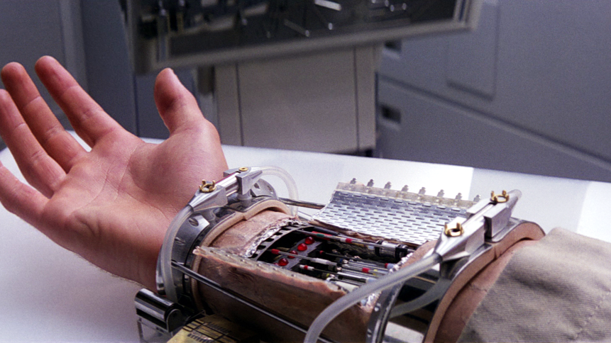

A prosthetic implant is an artificial device that replaces a missing body part, which may be lost through trauma, disease, or a condition present at birth (congenital disorder). Prostheses are intended to restore the normal functions of the missing body part. Amputee rehabilitation is primarily coordinated by a physiatrist as part of an inter-disciplinary team consisting of physiatrists, prosthetists, nurses, physical therapists, and occupational therapists.
